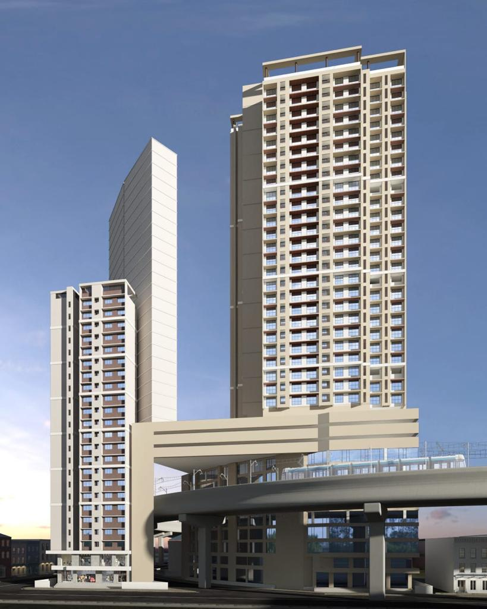

Seamless approvals. Timely clearances. Strong relationships with every authority that matters to your project.
Our Architectural Liaison Services focus on coordinating with government authorities and relevant departments to obtain necessary approvals, permissions, NOCs, and sanctions for residential, commercial, redevelopment, and other development projects. We ensure proper documentation, timely submissions, follow-ups, and coordination throughout the approval process.
"We simplify the approval process by integrating statutory requirements into the design from the outset, ensuring projects are efficient, compliant, and ready for execution without unnecessary delays."

Understanding project requirements, reviewing available documents, drawings, and applicable regulations.
Identifying the necessary permissions, NOCs, sanctions, and departmental clearances.
Preparing, compiling, and submitting the required documents, drawings, and applications.
Coordinating with relevant municipal departments, government authorities, and other agencies.
Regularly monitoring the proposal and following up with concerned officials for timely progress.
Studying authority remarks, coordinating revisions, and submitting necessary compliance documents.
Facilitating the process until the required approvals, NOCs, certificates, or permissions are obtained.
Maintaining approval records and assisting with subsequent amendments, renewals, or related permissions.

Coordinates project-related activities, documentation, site requirements, and communication with stakeholders across liaisoning assignments.

A dedicated junior professional assisting with day-to-day liaisoning tasks and authority coordination.
Focused on design development, statutory approvals, and interpreting DCR, building bylaws and zoning regulations for compliant, practical designs.

Part of the core team coordinating statutory submissions and authority follow-ups.
Part of the core team coordinating statutory submissions and authority follow-ups.
It's the coordination of a project's statutory approvals — building plan sanctions, NOCs, commencement and occupancy certificates — with municipal and government authorities on the client's behalf, from submission through final clearance.
Building plan sanction, development permissions, CC and further CC, OC, revised/amended proposals, layout approvals, fire NOC, environmental clearances, tree authority permissions, water and drainage NOCs, and MHADA-related approvals, among others.
Yes — society redevelopment and MHADA redevelopment approvals are a core part of our liaison practice.
Timelines vary by project type, jurisdiction and the specific approvals required. We identify the requirements early and follow up systematically to keep the process moving as quickly as the authorities allow.
Yes — we study each remark, coordinate the necessary revisions with the design team, and resubmit compliance documentation promptly.
Yes — we track every submission's status and keep clients informed on progress, remarks and next steps throughout the approval process.
Yes — most projects require sign-off from several municipal and government departments simultaneously, and we manage that coordination directly.
Yes — amendment and revision support is part of our post-approval service, including renewals and related follow-up permissions.